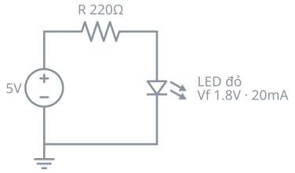
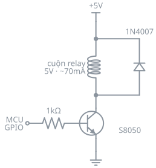

Mạch cơ bản 1.1 — LED + điện trở hạn dòng
Ảnh tĩnh, ~3KB, load tức thì, in giấy được. Ký hiệu chuẩn IEC.

Chạy mô phỏng thật — thấy dòng điện chảy, LED sáng. Bấm vào linh kiện để đổi giá trị.
Netlist Falstad (mỗi dòng 1 linh kiện, URL-encode rồi gắn vào ?cct=) $ 1 0.000005 10.2 50 5 50 v 176 336 176 128 0 0 40 5 0 0 0.5 ← nguồn DC 5V r 176 128 336 128 0 220 ← điện trở 220Ω 162 336 128 336 336 2 default-led 1 0 0 0.01 ← LED đỏ w 176 336 336 336 0 ← dây nối g 176 336 176 384 0 ← mass
Mạch nâng cao 2.2 — Relay + diode chống xung ngược
Transistor, cuộn relay, diode flyback — vẫn gọn và rõ trên 1 ảnh.

Nguồn vuông 40Hz thay MCU. Xoá diode (click → Delete) sẽ thấy áp cực C vọt lên hàng trăm volt.
178) nếu cần vẽ cả tiếp điểm.Chốt lại
schemdraw — chạy 1 lần lúc build, ra file SVG. Trang không thêm dep, không gọi mạng, in được, đọc nhanh. Sửa mạch = sửa 5 dòng Python.
Falstad — 0 dòng code, chỉ 1 thẻ iframe. Nhưng nặng (~1MB GWT app mỗi iframe), phụ thuộc falstad.com, và mất chữ tiếng Việt có dấu trong element text.
Dùng schemdraw làm mặc định cho cả 23 mạch, chèn Falstad chỉ ở vài mạch mà việc "chạy thử" mới là bài học (relay flyback, 555, cầu H).